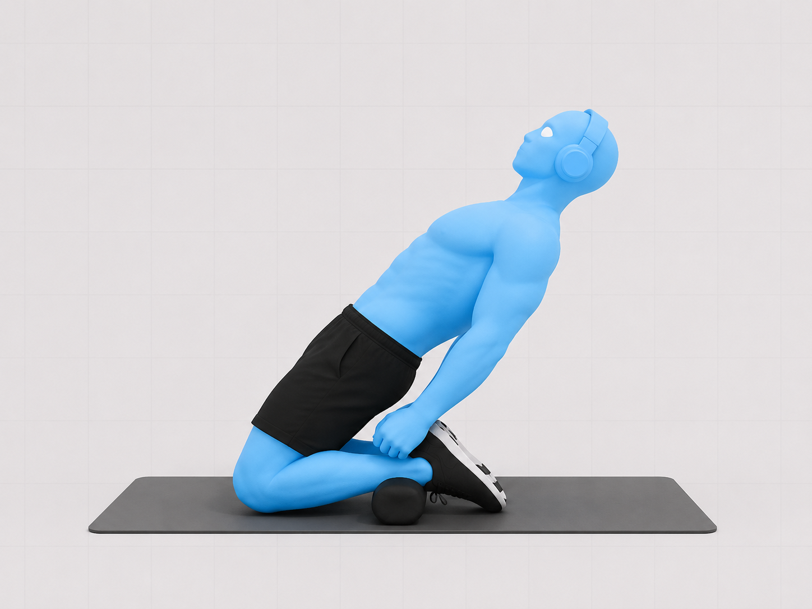
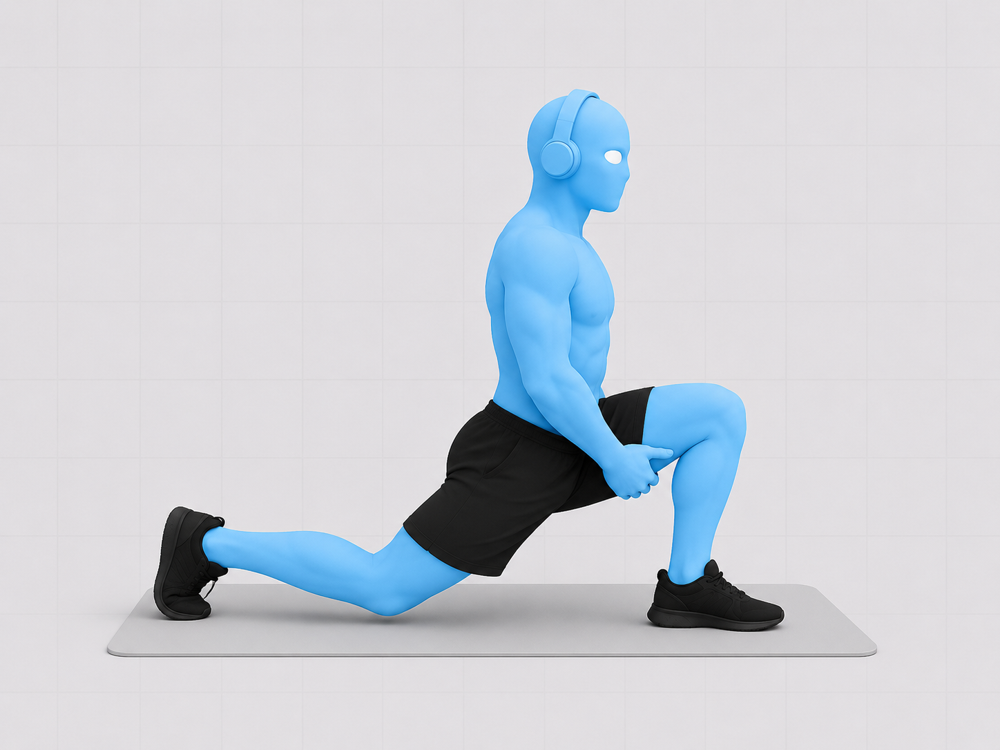
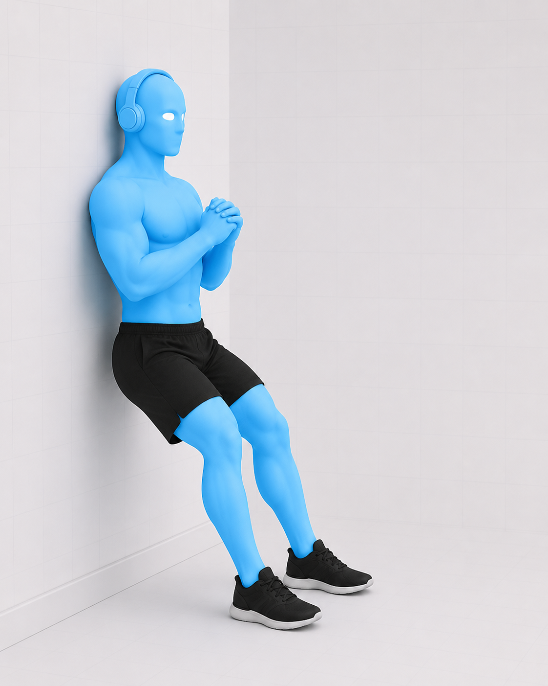
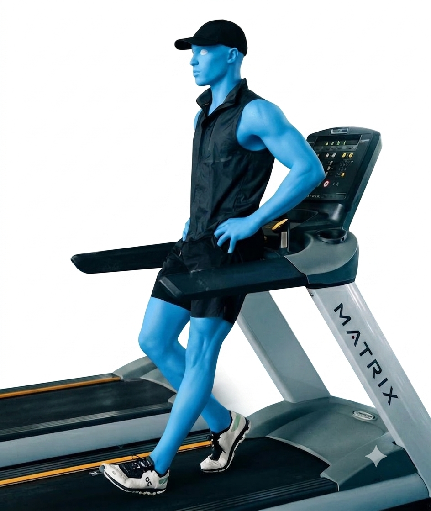
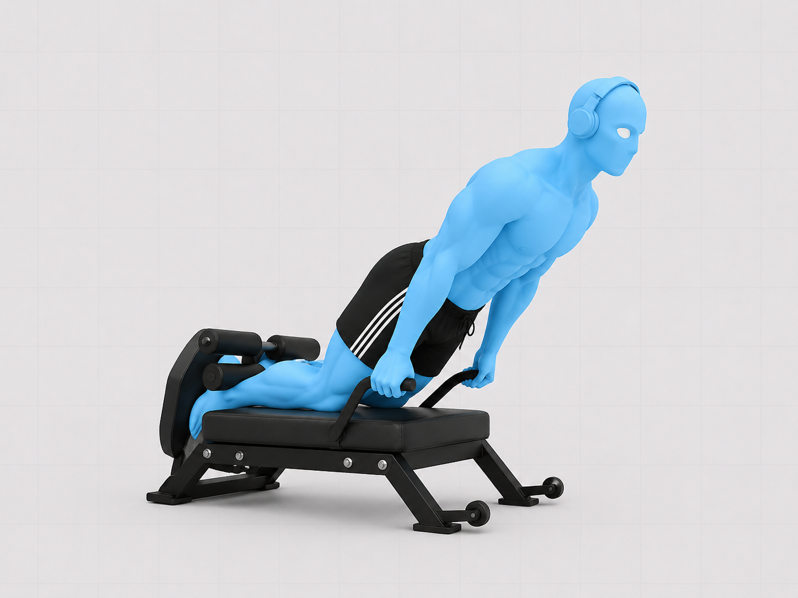
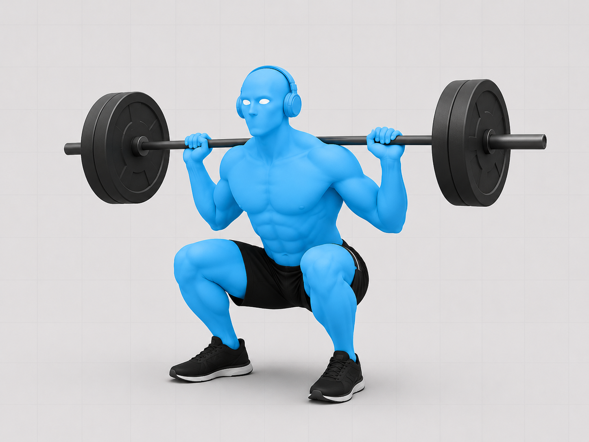
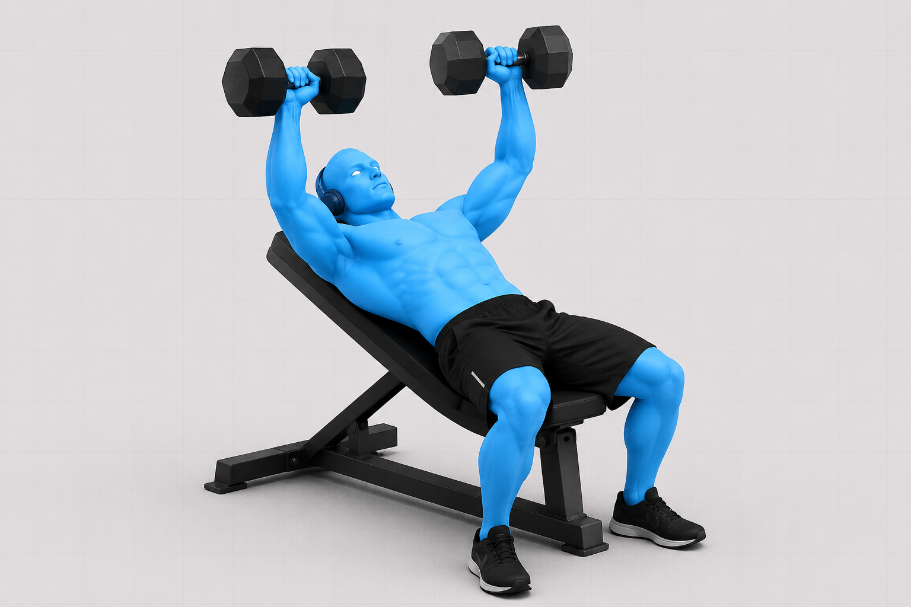

Mi Semana
Organizá tus actividades alrededor de tu horario fijo. Elegí una actividad de la paleta y despues tocá (o arrastrá) sobre las horas libres para pintarlas — tocá de nuevo para borrar. Se guarda solo en este dispositivo.
Entrenamiento Básico
Rutina mínima para días complicados: mantiene masa muscular y salud articular en 12–15 minutos.
Nota: solo Flexiones usa el método de Reps Efectivas (fallo real + rest-pause). Halo y Dead Bug son trabajo de movilidad/control, no de fuerza — igual que el Face Pull en Gimnasio, nunca se llevan al fallo.

Flexiones de brazos
Tips Pro de ejecuciónCodos a ~45° del torso, no pegados al cuerpo ni en cruz — es la posición que Athlean-X marca como la más segura para el hombro. Bajá hasta que el pecho casi toque el piso, escápulas libres, core y glúteos apretados como una tabla rígida. Método: serie de ignición hasta el fallo real, descanso de 15 segundos, y rondas de rest-pause hasta acumular 15 repeticiones efectivas — el mismo sistema que usás en Gimnasio. Si te resulta fácil llegar a las 15 en pocas rondas, subí la dificultad con pies elevados antes de sumar peso.

Halo con Kettlebell
Tips Pro de ejecuciónPeso liviano, la kettlebell viaja pegada a la cabeza en un círculo controlado. Core firme para que no se te vaya la zona lumbar hacia adelante al pasar la pesa por detrás. Movimiento lento, sin usar impulso: el objetivo es lubricar la articulación, no fatigar el hombro.

Abdominales — Dead Bug
Tips Pro de ejecuciónLa zona lumbar se mantiene pegada al piso durante todo el movimiento — esa es la clave, no la velocidad del brazo/pierna. Bajá el brazo y la pierna opuesta lento, exhalá al extender, y si la lumbar se despega, reducí el rango.
Rutina de 10 minutos — Salud de rodilla (Ben Patrick, "Knees Over Toes Guy")
5 ejercicios simples que él mismo explica y recomienda como base, sin necesidad de equipo especial. Pensada para días de bajo impacto o para sumar antes/después del entrenamiento principal.

Reverse Nordic (Lean Back)
Tips Pro de ejecuciónArrodillado sobre una superficie blanda, rodillas a lo ancho de la cadera, glúteos y abdomen apretados. Mantené una línea recta entre rodillas, cadera y hombros, e inclinate hacia atrás lo más lento y controlado que puedas sin que la cadera se doble — ahí es donde trabaja el cuádriceps. Volvé a subir con el mismo control. Para empezar: hacelo con menos rango de movimiento, o poné un sillón/banco detrás tuyo como red de seguridad para no tener miedo de caer. No hace falta llegar muy atrás las primeras semanas.

ATG Split Squat (Estocada profunda con talón elevado)
Tips Pro de ejecuciónPie de adelante sobre una cuña o disco chico (talón elevado unos centímetros), pie de atrás relajado detrás tuyo. Bajá dejando que la rodilla de adelante viaje hacia adelante, más allá de la punta del pie ("knees over toes"), hasta donde te resulte cómodo — no hace falta tocar el piso. Subí controlado. Para empezar: sin elevar el talón y con rango parcial, sumando profundidad de a poco semana a semana.

Tibialis Raise (elevación de tibiales)
Tips Pro de ejecuciónParado, espalda apoyada contra la pared, talones a unos 20-30cm de distancia de la pared. Sin mover la pierna, llevá la punta del pie hacia arriba (hacia la espinilla) tan lejos como puedas, y bajá controlado. Es un ejercicio que casi nadie entrena y que, según Ben Patrick, protege la espinilla y el tobillo en saltos y carrera.

Caminata hacia atrás (Backward Walking)
Tips Pro de ejecuciónCaminá hacia atrás en línea recta (afuera, en una cinta, o yendo y viniendo en una habitación libre de obstáculos), pasos cortos y controlados, mirando por encima del hombro cada tanto para orientarte. Es uno de los ejercicios más simples que recomienda Ben Patrick: reduce la fuerza de corte en la rodilla comparado con caminar hacia adelante, ideal para gente con dolor de rodilla activo.

Nordic Curl asistido ("Poor Man's Nordic")
Tips Pro de ejecuciónArrodillado, con alguien sosteniéndote los tobillos (o los pies trabados debajo de un mueble pesado/sofá), bajá el torso hacia adelante lo más lento posible controlando con los isquiotibiales, usando las manos para frenar el último tramo y amortiguar contra el piso. Con solo 5 repeticiones alcanza — es un ejercicio muy intenso. Para empezar: apoyate en las manos desde antes en el recorrido, cuanto menos rango, más fácil.
Jump Attack
Programa principal de salto — 12 semanas reales (90 días), en 3 fases: Fuego, Fuerza y Vuelo. Cada fase dura 4 semanas: 3 semanas de trabajo + 1 semana de descarga.
🔥 Mes 1 — Fuego: aprendemos a sostener posiciones, como una estatua que tiembla un poquito.
💪 Mes 2 — Fuerza: juntamos sostener + saltar, para que el cuerpo aprenda a explotar.
🚀 Mes 3 — Vuelo: todo más rápido y más explosivo, como si tuvieras resortes en las piernas.
Entrenás Lunes, Martes, Jueves y Viernes. Miércoles, Sábado y Domingo son de descanso — pero podés jugar a tu deporte, no te quedes en el sillón. Cada 4 semanas hay una semana más suave (de descarga) para que el cuerpo se recupere: ahí NO se levanta peso, solo se juega y se mueve.
—
Elegí una fecha de inicio para ver tu calendario.
Semanas 1 a 4
Piernas Implacables (Día 1 y 4) + Cuerpo Total Implacable (Día 2 y 5). La Semana 4 es descarga.
Día de cuerpo entero (Mar/Vie): 7 ejercicios de "quedarse quieto sosteniendo" (holds), uno atrás del otro, sin estiramiento entre medio. El tiempo que aguantás sube cada semana.


Secuencia 1 — Sentadilla de puntillas
| Semana | Hold (sostener) | Bomba (pulsos) |
|---|---|---|
| Semana 1 | 60 seg | 15 reps |
| Semana 2 | 90 seg | 10 reps |
| Semana 3 | 120 seg | 5 reps |
| Semana 4 | Descarga — bajá volumen | |
Hidrantes: apoyo en cuatro puntos, levantá la rodilla hacia el costado sin rotar la cadera, empujá con el glúteo medio, no con la zona lumbar (10 adelante, 10 atrás, 10 al costado, por pierna). Hold de sentadilla de puntillas: sentadilla parcial parado en la punta de los pies, core firme, peso repartido en los metatarsos. Bomba: mismos rangos, pulsos cortos sin perder la altura del talón. Cerrá con el estiramiento de flexor de cadera, 30s por lado, sin rebotar.


Secuencia 2 — Estocada (Lunge)
| Semana | Hold | Bomba |
|---|---|---|
| Semana 1 | 60 seg | 15 reps |
| Semana 2 | 90 seg | 10 reps |
| Semana 3 | 120 seg | 5 reps |
| Semana 4 | Descarga | |
Hold de estocada: rodilla de adelante alineada con el pie (no colapsa hacia adentro), torso alto, sostené la posición baja sin apoyar la rodilla trasera. Bomba: pulsos pequeños en el mismo rango, sin bloquear la respiración.


Secuencia 3 — Estocada búlgara elevada
| Semana | Hold | Bomba |
|---|---|---|
| Semana 1 | 60 seg | 15 reps |
| Semana 2 | 90 seg | 10 reps |
| Semana 3 | 120 seg | 5 reps |
| Semana 4 | Descarga | |
Pie trasero apoyado en un banco, peso casi todo en la pierna de adelante. En el hold, torso ligeramente inclinado adelante sin perder el equilibrio; en la bomba, pulsos cortos controlando que la rodilla no se vaya hacia adentro.


Secuencia 4 — Peso muerto piernas rectas
| Semana | Hold | Bomba |
|---|---|---|
| Semana 1 | 60 seg | 15 reps |
| Semana 2 | 90 seg | 10 reps |
| Semana 3 | 120 seg | 5 reps |
| Semana 4 | Descarga | |
Bisagra de cadera con piernas casi rectas, espalda neutra (no redondeada), el movimiento sale de la cadera, no de la lumbar. En el hold, sostené el punto de máximo estiramiento de isquiotibiales que puedas controlar.


Secuencia 5 — V-Up (core + pantorrilla)
| Semana | Hold | Bomba |
|---|---|---|
| Semana 1 | 60 seg | 15 reps |
| Semana 2 | 90 seg | 10 reps |
| Semana 3 | 120 seg | 5 reps |
| Semana 4 | Descarga | |
Acostado, elevá tronco y piernas formando una V, brazos buscando los pies. En el hold, lumbar pegada al piso (no arqueada). Cerrás con estiramiento de pantorrilla en V en vez del estiramiento de cadera.
Hacé los 7 ejercicios seguidos, sin pre-fatiga ni estiramiento entre medio. Semana 1: 30s · Semana 2: 60s · Semana 3: 90s · Semana 4: descarga (volvé a 30s o bajá volumen).

1. Mantener la flexión (push-up hold)
Tips ProSostené la posición baja de la flexión, codos cerca del cuerpo (~45°), cuerpo en línea recta de cabeza a talones, sin que la cadera se hunda.

2. Soporte de dominada (pull-up hold)
Tips ProMentón sobre la barra, escápulas activas hacia abajo y atrás, evitá que los hombros se encojan hacia las orejas.

3. Soporte aéreo
Tips ProCore y hombros sostienen la posición, no el cuello. Buscá la técnica más controlada que puedas mantener todo el tiempo.

4. Mantener el bícep
Tips ProCodo fijo pegado al torso durante todo el mantenimiento, sostené el ángulo medio sin que el brazo empiece a temblar y perder la posición.

5. Mantener la flexión de tríceps
Tips ProCodos apuntando hacia atrás (no hacia los costados), sostené el ángulo medio de extensión sin que el codo se abra.

6. Soporte de tablón de rana
Tips ProRodillas abiertas hacia los costados con los pies juntos, cadera baja y controlada, core firme.

7. Soporte en plancha lateral
Tips ProCadera elevada en línea recta con el torso, no dejes que se hunda. Repetí el tiempo completo de cada lado.
Semanas 5 a 8 — Piernas de Poder
Acá se combina pesas + salto en la misma secuencia (superserie). El hold ahora baja de tiempo semana a semana mientras el ejercicio explosivo se vuelve más intenso — el cuerpo llega "precansado" al salto para aprender a ser explosivo bajo fatiga. Semana 8 es descarga.


Secuencia 6 — Sentadillas sentadas + Estocada Buttkicker
| Semana | Hold sentadilla | Estocada buttkicker |
|---|---|---|
| Semana 5 | 30s + 10 reps | 10 x lado |
| Semana 6 | 20s + 10 reps | 8 x lado |
| Semana 7 | 10s + 10 reps | 6 x lado |
| Semana 8 | Descarga | |
Puente de glúteos: apretá fuerte arriba, empujando con el talón, sin arquear la lumbar. Sentadilla sentada (hold): sentadilla profunda sostenida, pecho arriba, rodillas siguiendo la punta del pie — después del hold, directo a las repeticiones sin pausa. Estocada buttkicker: estocada dinámica combinada con talón al glúteo — controlá el aterrizaje antes de repetir.


Secuencia 7 — Estocada inversa + Salto Tuck
| Semana | Hold estocada | Salto tuck |
|---|---|---|
| Semana 5 | 30s + 10 reps | 10 reps |
| Semana 6 | 20s + 10 reps | 8 reps |
| Semana 7 | 10s + 10 reps | 6 reps |
| Semana 8 | Descarga | |
Estocada inversa (hold): paso hacia atrás, rodilla trasera casi al piso, peso en el talón delantero. Salto tuck: despegue con las dos piernas llevando las rodillas al pecho — aterrizá suave con las rodillas alineadas.


Secuencia 8 — Levantamiento muerto burpee + Salto a caja sentada
| Semana | Hold plancha + combo | Salto caja |
|---|---|---|
| Semana 5 | 30s + 10 combos | 10 reps (caja 18-24") |
| Semana 6 | 20s + 10 combos | 8 reps (caja 24-36") |
| Semana 7 | 10s + 10 combos | 6 reps (caja 36-42") |
| Semana 8 | Descarga | |
Levantamiento muerto burpee: combina la bisagra de cadera del peso muerto con la bajada a plancha del burpee — mantené la espalda neutra en cada transición. Salto de caja sentada: arrancás sentado (sin impulso de brazos) y saltás al cajón — la caja sube de altura cada semana mientras bajan las repeticiones: menos volumen, más intensidad.


Secuencia 9 — Peso muerto piernas rectas + Buttkicker 1 pierna
| Semana | Hold peso muerto | Buttkicker 1 pierna |
|---|---|---|
| Semana 5 | 30s + 10 reps | 10 x lado |
| Semana 6 | 20s + 10 reps | 8 x lado |
| Semana 7 | 10s + 10 reps | 6 x lado |
| Semana 8 | Descarga | |
Peso muerto piernas rectas (hold): igual que en Fase 1 pero con foco en tiempo bajo tensión, seguido de reps dinámicas. Buttkicker a una pierna: talón al glúteo en apoyo unilateral — controlá la cadera para que no rote.


Secuencia 10 — Elevación de pantorrillas con peso
Tips ProSubida completa hasta la punta del pie, bajada lenta y controlada más allá del paralelo para trabajar rango completo. Cierra el bloque con estiramiento de pantorrilla en vez de flexor de cadera.
Cada ejercicio se sostiene en isometría y, apenas termina el tiempo, hacés 10 repeticiones dinámicas sin pausa. El hold baja de tiempo cada semana, no sube. Semana 5: 30s+10 · Semana 6: 20s+10 · Semana 7: 10s+10 · Semana 8: descarga.

1. Flexión: hold + 10 reps
Tips ProSostené abajo con los codos a 45°, y al cortar el tiempo hacé las 10 flexiones completas sin perder la técnica.

2. Dominada: hold + 10 reps
Tips ProMentón sobre la barra en el hold, escápulas activas. Priorizá el rango completo por sobre la velocidad en las 10 reps.

3. Soporte aéreo: hold + 10 reps
Tips ProEl core sostiene la posición, no el cuello ni la lumbar. Bajá la exigencia si notás que perdés técnica.

4. Bícep: hold + 10 reps
Tips ProCodo fijo durante el hold y las 10 repeticiones — no lo dejes viajar hacia adelante para ayudarte con impulso.

5. Tríceps: hold + 10 reps
Tips ProCodos apuntando atrás durante todo el ejercicio, tanto en el hold como en las repeticiones.

6. Plancha de rana: hold + 10 reps
Tips ProCadera baja y controlada en el hold; en las repeticiones, mové la cadera sin perder la posición de rodillas abiertas.

7. Plancha lateral: hold + 10 reps
Tips ProCadera elevada durante el hold; en las repeticiones, subí y bajá en rango corto sin tocar el piso. Ambos lados.
Semanas 9 a 12 — Piernas Explosivas
Última fase: máxima velocidad y explosividad. El "hold" ahora se mide en repeticiones máximas dentro de una ventana de tiempo que se acorta cada semana. Semana 12 es descarga — y ahí termina el programa (día 90).


Secuencia 11 — Levantamiento muerto + Tijeras Buttkicker
| Semana | Peso muerto (reps máx.) | Tijeras buttkicker |
|---|---|---|
| Semana 9 | en 30s | 10 reps alternando |
| Semana 10 | en 20s | 8 reps alternando |
| Semana 11 | en 15s | 6 reps alternando |
| Semana 12 | Descarga — fin del programa | |
Combo hidrante/puente: encadena la activación de glúteo medio del hidrante con el puente de glúteo en una sola serie continua. Tijeras alternadas buttkicker: alternás pierna adelante/atrás en el aire llevando el talón al glúteo — más difícil que el buttkicker a una pierna de la Fase 2.


Secuencia 12 — Sentadillas + Salto con rodamiento atrás
Tips ProSalto con rodamiento hacia atrás: después del salto, absorbés el aterrizaje rodando suavemente hacia atrás sobre la espalda (sin golpear la cabeza) y volvés a pararte — trabaja el control del cuerpo en el aire y la desaceleración.


Secuencia 13 — Estocada búlgara elevada + Bronco kick tuck
Tips ProSalto bronco kick tuck: combina una patada tipo "bronco" (manos al piso, patada de las piernas hacia atrás) con un salto tuck — de los ejercicios más exigentes del bloque, priorizá técnica antes que velocidad.


Secuencia 14 — Peso muerto piernas rectas + Salto de profundidad de ataque
Tips ProSalto de profundidad de ataque: caída desde una superficie elevada con rebote inmediato hacia arriba con máxima intención — contacto mínimo con el piso, el patrón "reactivo" que transfiere directo al salto vertical.
Secuencia 15 — Elevación de pantorrillas con peso
Tips ProMismo ejercicio que la secuencia 10, cerrando el bloque de piernas explosivas con el mismo trabajo de pantorrilla y su estiramiento.
Nada de holds: son repeticiones máximas en 30 segundos por ejercicio, semanas 9, 10 y 11. Objetivo: superar tu propia marca cada semana. Semana 12: descarga, cierre del programa.

1. Flexiones con palmada
Tips ProEmpuje explosivo para despegar las manos del piso y dar la palmada, aterrizaje suave con los codos listos para absorber.

2. Combo liberación de dominada
Tips ProAlterná entre dominada estricta y el componente de liberación/impulso, siempre controlando la bajada para proteger el hombro.

3. Limpio a la prensa aérea
Tips ProTirón desde el piso o la cadera hasta los hombros ("limpio"), después empuje directo arriba de la cabeza. Cadera y core estabilizan.

4. Curl de bíceps
Tips ProCodos fijos, rango completo, sin usar impulso de cadera — la velocidad viene de la contracción del bícep.

5. Flexiones de pike elevadas
Tips ProPies elevados, cadera alta formando una V invertida — cabeza entre los brazos, sin colapsar el cuello.

6. Plancha de rana alterna
Tips ProDesde la posición de rana, alterná llevando una rodilla hacia el pecho y después la otra, cadera baja y estable.

7. Plancha lateral eléctrica
Tips ProVersión dinámica: subís y bajás la cadera en rango corto y rápido sin tocar el piso, torso alineado todo el tiempo.
Correr — Método Noruego de Umbral
Una sesión semanal de control de umbral, basada en el modelo de Marius Bakken — médico, dos veces olímpico y ex récord noruego de 5000m (13:06). No es folclore: es el verdadero creador del método de doble umbral, antes incluso de que se hiciera famoso por los hermanos Ingebrigtsen (a cuyo entrenador terminó asesorando directamente).
01 · Calentamiento — 15–20 min
Trote suave (zona 1, conversación fluida) + 4–6 progresiones de 80m aumentando el ritmo gradualmente. Movilidad dinámica de cadera y tobillo antes de entrar al bloque principal.
02 · Bloque de intervalos — Umbral de lactato
4–6 x 6–8 min a esfuerzo controlado, buscando la "zona dulce" de Bakken: 2.0–3.0 mmol de lactato — bastante por debajo del punto de referencia tradicional de 4.0 mmol que usa la mayoría. Sensación de "cómodamente duro", nunca al máximo. Frecuencia cardíaca objetivo: 85–89% de tu FC máxima. Recuperación trote suave 1–2 min entre series.
03 · Vuelta a la calma — 10–15 min
Trote muy suave (zona 1) para bajar pulsaciones + estiramientos activos de isquios, cuádriceps y gemelos. Cerrá con respiración controlada para acelerar la recuperación.
Gimnasio — Fuerza y Potencia
2 días por semana, full body en ambos (no dividido en superior/inferior), basado en la metodología de Jeff Cavaliere (Athlean-X).
El método: "Reps Efectivas"
Cómo funcionaNo es "3 series de 10". Elegís un peso, hacés una serie de ignición hasta el fallo real (no podés hacer una repetición más), descansás solo 15 segundos, y seguís sumando repeticiones en rondas cortas (rest-pause) hasta acumular el número total de "reps efectivas" marcado en cada ejercicio. Cuántas rondas te tome llegar ahí varía cada semana según tu fatiga — es intencional. Cavaliere lo resume así: "el estrés metabólico de esas últimas repeticiones, las más difíciles, es el verdadero motor del crecimiento".
Día A — Sagital / Fuerza de empuje
Calentá 2 minutos con band pull-aparts livianos antes de arrancar (su "primer" estándar).

Sentadilla
Tips Pro de ejecuciónEs uno de sus 12 ejercicios esenciales: "hitea cuádriceps, glúteos y aductores, incluso isquiotibiales... es un patrón de movimiento fundamental, lo vas a necesitar para levantarte del inodoro toda tu vida" — palabras de Cavaliere. Elegí un peso que te haga fallar entre 8-10 reps para la serie de ignición.

Press banca con mancuernas
Tips Pro de ejecuciónMancuernas por sobre barra: permiten que cada hombro se mueva de forma independiente, respetando el ritmo escapular natural. Es, según él, "la mejor forma de construir el pecho, con el beneficio extra de trabajar hombro y tríceps al mismo tiempo".

Dominadas
Tips Pro de ejecución"Uno de los mejores ejercicios de espalda que existen. Exige no solo fuerza para levantar todo tu peso corporal, sino hacerlo con el torso rígido" — Cavaliere. Si todavía no llegás a hacerlas sin asistencia, usá banda elástica o la máquina asistida, pero mantené la misma técnica de fallo + rest-pause. Por qué el curl de bíceps va en este mismo día: espalda y bíceps trabajan juntos como músculos "de tracción" — entrenarlos separados en días consecutivos (por ejemplo espalda un día, bíceps al siguiente) deja al bíceps sin las 48hs de descanso que necesita, porque ya lo estuviste usando indirectamente acá.

Zancada (Lunge)
Tips Pro de ejecuciónLa describe como "el complemento perfecto a los ejercicios de plano sagital" (sentadilla, press, remo) — trabaja estabilidad unilateral que los movimientos bilaterales no cubren.

Face Pull
Tips Pro de ejecuciónNo es para fallar — es activación. Según Cavaliere, "no hace solo una cosa: entrena espalda alta, manguito rotador y retractores escapulares, tres zonas que casi nadie trabaja lo suficiente". Codos altos, tirá hacia la frente, aprieta omóplatos al final.

Rotación externa con banda
Tips Pro de ejecuciónCodo pegado al cuerpo a 90°, girás el antebrazo hacia afuera contra la banda. Cavaliere es tajante acá: "los músculos del manguito rotador son los únicos que rotan externamente el hombro — si no hacés un esfuerzo consciente por entrenar esto, no importa cómo sea el resto de tu programa, vas a tener un desbalance que no vas a poder superar".

Curl de bíceps con barra
Tips Pro de ejecuciónPrefiere la barra sobre mancuernas acá específicamente porque permite cargar más peso y aprovechar la sobrecarga excéntrica controlada, algo que él señala como "el estímulo número uno detrás del crecimiento de mis bíceps". Tempo correcto (corregido): no es 4s/4s parejo — es 1 segundo de subida explosiva y 3 segundos de bajada controlada, para duplicar el tiempo bajo tensión sin alargar la serie de más. Muñeca: mantenela en ligera extensión (doblada hacia atrás unos 15-20°) durante todo el recorrido — es la posición más fuerte biomecánicamente y mantiene la tensión en el bíceps en vez de escaparse al antebrazo. Evitá las curl de concentración: según él son "de bajo rendimiento", preferí siempre esta variante con barra o EZ bar si te molesta la muñeca. Para estirar la serie de ignición: cuando falles con técnica estricta, podés sumar 2-3 repeticiones más con un "cheat controlado" — un leve impulso de cadera hacia adelante, pero solo hasta que tu espalda llegue a la vertical, nunca inclinándote hacia atrás más allá de eso.

Variante opcional — Curl en dominada (Chin-Up Curl)
Tips Pro de ejecuciónCavaliere lo llama uno de sus ejercicios favoritos para bíceps: "va a construir tus bíceps más rápido que cualquier otro". Es una dominada modificada: agarre por debajo un poco más ancho que los codos, muñeca ligeramente hacia atrás, la barra bien metida en la palma (no en los dedos). Al subir, mantené el ángulo del codo abierto y el cuerpo alejado de la barra, dejando que el torso se arquee levemente imitando la trayectoria curva de un curl con barra. La razón técnica: la cabeza larga del bíceps cruza la articulación del hombro, así que solo se activa al 100% cuando el hombro también está en flexión — algo que un curl de pie normal no logra. Usalo como reemplazo ocasional de las Dominadas normales del Día A cuando quieras variar el estímulo, no todas las semanas.
Core finisher — Día A
Tips Pro de ejecuciónSu secuencia va de abdominales inferiores a rotación — acá cerramos con esas dos. Heels to Heaven: acostado, piernas a 90°, empujá los talones hacia el techo iniciando desde la pelvis. Drunken Mountain Climbers: lleva la rodilla cruzando el cuerpo, sumando el componente rotacional.
Día B — Frontal / Fuerza de tracción
Mismo calentamiento: 2 minutos de band pull-aparts livianos.

Peso muerto (o rumano)
Tips Pro de ejecución"No hay mejor ejercicio para la cadena posterior que el peso muerto. Entrena el patrón de bisagra de cadera, uno que vas a necesitar dominar no solo para el levantamiento, sino para la vida diaria" — Cavaliere. Si preferís cuidar más la zona lumbar, la variante rumana (piernas semi-rígidas) es igual de válida para este objetivo.

Press militar con mancuerna (a una mano)
Tips Pro de ejecuciónUna mancuerna por vez en vez de las dos juntas — según él, "tenés mejor chance de alinear las articulaciones apropiadamente" que con el press bilateral tradicional.

Remo con barra
Tips Pro de ejecuciónLa clave según Cavaliere: "tenés que llevar las caderas hacia atrás para evitar simplemente inclinarte hacia adelante, lo que le pone estrés excesivo a la espalda baja". Bisagra de cadera primero, después remás.

Flexiones (variación desafiante)
Tips Pro de ejecuciónSu consejo es simple pero importante: "encontrá el nivel de dificultad correcto de la flexión — si buscás ganancias de hipertrofia, necesitás una variante que realmente te desafíe". Si las flexiones normales ya no te cuestan, elevá los pies o agregá una pausa de 2 segundos abajo.
Face Pull
Tips Pro de ejecuciónMismo ejercicio que el Día A — la salud de hombro se entrena las 2 sesiones, no una sola vez por semana, siguiendo la misma lógica de frecuencia que aplica al resto del cuerpo.
Rotación externa con banda
Tips Pro de ejecuciónRepetido intencionalmente del Día A — es el ejercicio que Cavaliere marca como no-negociable en cualquier programa, así que va en las dos sesiones semanales.

Extensión de tríceps acostado
Tips Pro de ejecuciónCodos apuntando hacia atrás, no hacia los costados — es la modificación que él insiste para proteger el hombro. Sobre por qué le gusta este ejercicio en particular: "pone la cabeza larga del tríceps, dos tercios del tamaño total del brazo, bajo un gran estiramiento en cada repetición".
Core finisher — Día B
Tips Pro de ejecuciónAcá cerramos con rotación + abdominales superiores, completando el otro extremo de su secuencia. Corkscrew: despegá la pelvis del piso llevándola hacia la cabeza, con un pequeño giro arriba — apunta directo al abdomen inferior con componente rotacional.
Progresión de cargas
Regla general: si esta semana llegaste a tu número de "reps efectivas" en menos rondas que la semana pasada (por ejemplo, en 3 rondas en vez de 4), es momento de subir el peso 2,5-5%. Si te tomó más rondas llegar al mismo número, mantené el peso una semana más.
Regla de oro: nunca sacrifiques forma por peso — un rest-pause con mala técnica no cuenta como "rep efectiva".
Microciclos: cada 6-8 semanas, semana de descarga: mismos ejercicios, pero sin llegar al fallo (parate 2-3 reps antes).
Elongación y Movilidad
Rutina semanal de flexibilidad activa y descompresión, después de entrenamientos intensos.

Couch Stretch
Tips ProEstiramiento clásico de KneesOverToesGuy para el psoas y cuádriceps. Cadera del lado que estirás debe quedar por debajo (no adelantada), apretá el glúteo para profundizar sin forzar la lumbar.

Rotaciones torácicas (90/90)
Tips ProCadera fija en el piso, rotá solo desde la espalda alta llevando el brazo hacia atrás siguiendo la mirada. Movimiento lento, sin rebotes.

Perro boca abajo (descompresión)
Tips ProEmpujá el piso con las manos para alargar la columna, talones buscando el piso sin forzar. Ideal para descomprimir después de sentadillas y saltos pesados.

Rodilla al frente (dorsiflexión)
Tips ProTalón siempre pegado al piso, empujá la rodilla hacia adelante sobre el pie. Mejora el rango sin el cual no hay buena técnica de aterrizaje.

Isquiotibiales activo (pierna elevada)
Tips ProPierna apoyada en una superficie a la altura de la cadera, espalda recta inclinándote desde la cadera.

Foam roller — cuádriceps/gemelos
Tips ProPasadas lentas, pausando 15–20s en puntos de mayor tensión sin llegar a dolor agudo. Ayuda a la recuperación entre sesiones de salto intensas.